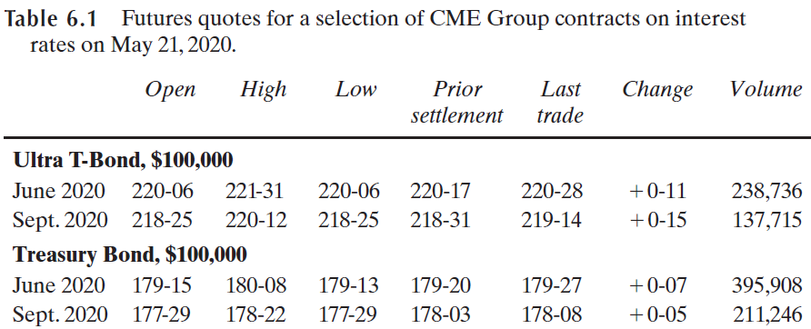
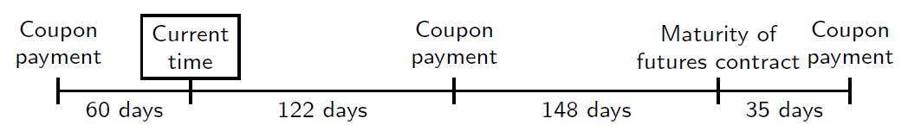
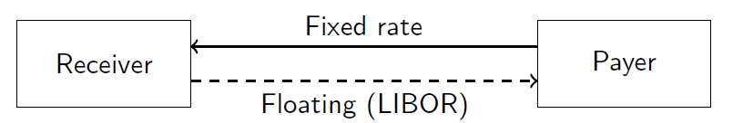
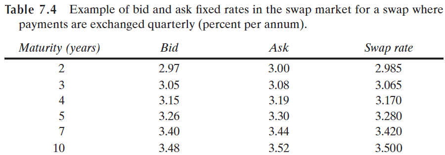
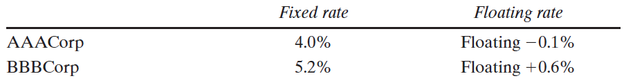
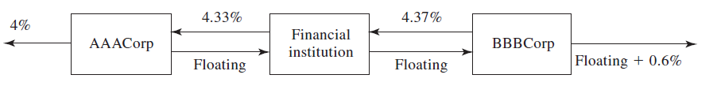
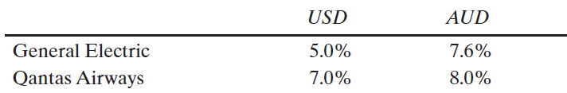
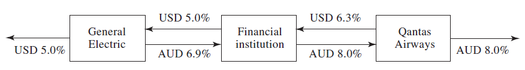

BUSS386 Futures and Options
Interest Rate Futures
Swaps
Reading: Ch. 6.1–6.3 and Ch. 7
Pricing in financial markets started long before computers…
Conventions vary from country to country and from instrument to instrument
Actual/Acutal: US treasury bonds, Australia
30/360 method: US corporate/municipal bonds, Eurobonds
Actual/360: US money market
Actual/365: Korea, UK, Japan
$ X/Y $, where \(X\) is the number of days in a month, and \(Y\) is the number of days in a year.
Source:https://www.rbcits.com/en/gmi/global-custody/market-profiles.page
Consider a Treasury bond and a corporate bond both have the same annual coupon payment dates (Principal: $100, coupon rate: 8%).
How much interest is accured for the period from March 1, 2018 to July 3, 2018, for the two bonds, respectively?
Act/Act: \(\frac{124}{184} \times \$4 =2.6957\)
30/360: \(\frac{122}{180} \times \$4 =2.7111\)
How about from October 3, 2018 to January 1, 2019?
Act/Act: \(\frac{92}{181} \times \$4 =2.0331\)
30/360: \(\frac{90}{180} \times \$4 =2.0000\)
Excel functions: Days and Days360
What if we use Actual/365?
Actual/360?
[NB] Therefore, 8% in Actual/360 is equivalent to \(8\% \times \frac{365}{360} = 8.1111\%\)
[NB] 1% in Actual/360 would earn \(1\% \times 365/360\) of interest in 365 days.
Underlying variable: ``Virtual’’ bond price or interest rate
In the U.S., the bonds actually delivered by the party on the short side of the futures contract are not necessarily of those exact same maturities.
Acceptable government bonds/notes to deliver are:
In Korea, TB futures are cash-settled.

In the U.S., thirty-seconds of a dollar per $100 face value. In Korea, percentage point.
The quoted price is for a bond with a face value of $100.
Example: a quote of 90’05 indicates that if the bond has a face value of $100,000 its price will be \((90+5/32)\times 1,000 = \$90,156.25\)
This quoted price is also known as the clean price.
The actual cash price that has to be paid by the purchaser of the bond is known as the dirty price.
Cash price = Quoted price + Accrued Interest
On March 5th 2013, there is a 11%-coupon treasury bond maturing on July 10th 2028, with a quoted price of 95’16.
Coupons semi-annually: last coupon was paid on January 10th 2013. The next coupon date is July 10th 2013.
The accrued interest on Mar 5 is: \(\$5.50 \times 54 / 181 = \$1.64\)
The cash price per $100 face value is thus \(\$95.50+\$1.64 = \$97.14\)
The cash price of a $100,000 face value bond is thus: $97,140
Cash price = Quoted Price + Accrued interest
(Quoted price is called settlement price for futures.)
Cash price = Settlement Price + Accrued interest
(But the delivered bond may not be a 6% coupon bond.)
Cash price = Settlement Price \(\times\) Conversion factor + Accrued interest
Example
\[ (1.3800 \times 120.00) + 3.00 = \$168.60 \]
At any given time during the delivery month, there are many bonds that can be delivered in bond futures contracts
The party with the short position, when delivering the bond, receives:
[1] Settlement Price \(\times\) Conversion factor + Accrued interest
[2] Quoted bond price + Accrued interest
Quoted bond price \(-\) (Settlement price \(\times\) Conversion factor)
| Bond | Quoted price | Conversion factor |
|---|---|---|
| 1 | 99.50 | 1.0382 |
| 2 | 143.50 | 1.5188 |
| 3 | 119.75 | 1.2615 |
Bond 1: \(99.50 - 93.25 \times 1.0382 = \$2.69\)
Bond 2: \(143.50 - 93.25 \times 1.5188 = \$1.87\)
Bond 3: \(119.75 - 93.25 \times 1.2615 = \$2.12\)
The cheapest-to-deliver bond is Bond 2.
The conversion factor for a bond is equal to the quoted price the bond would have (per dollar of principal) on the first day of the delivery month on the assumption that the yield curve is flat at 6% with semiannual compounding.
Details…
[NB] In the case of the 2-year and 5-year note futures contract, a similar calculation is used to determine the conversion factor except that the time to maturity is rounded to the nearest month.
[NB] We don’t use c.c. interest rate here.
Assume a 10% coupon bond with 20 years and 2 months to maturity.
Rounding down to the nearest 3 months, the bond is thus assumed to have exactly 20 years to maturity.
Since 20 years is an exact number of 6-month periods, the first coupon payment is therefore assumed to be made after 6 months.
Assuming a $100 face value, and a flat 6% per annum discount rate with semiannual compounding, the value of the bond is:
\[ \sum_{i=1}^{40}\frac{100(0.10/2)}{(1+0.06/2)^i} +\frac{100}{(1+0.06/2)^{40}}=\$146.23 \]
Assume an 8% coupon bond with 18 years and 4 months to maturity.
Rounding down to the nearest 3 months, the bond is thus assumed to have exactly 18 years and 3 months to maturity.
Compute the price of the bond at a “time point” 3 months from now when the first coupon happens.
The value of the bond at that point is:
\[ 100(0.08/2)+\sum_{i=1}^{36}\frac{100(0.08/2)}{(1+0.06/2)^i} +\frac{100}{(1+0.06/2)^{36}}=\$125.83 \]
At “time 0”, the price is \(\$125.83/(1+0.06/2)^{1/2} = \$123.99\): cash price of the bond.
To get the quoted price of the bond, subtract the accrued interest from the prior 3 months: \(\$123.99 - \$4/2 = \$121.99\) and the conversion factor 1.2199.
The reason for the 6% discount rate used in the computation of the conversion factor is the fact that bond futures prices, by construction, assume a 6% coupon rate.
If the bond being delivered actually has a 6% coupon rate, the conversion factor will be equal to 1 since it will discount future $6 coupon payments ($3 twice a year equating $6 per year) at a rate of 6%.
The short party would actually receive the futures settlement price without any modification (except for possible accrued interest).
But if the bond has a higher coupon payment, the short party should be compensated for the fact that he is giving a higher-paying bond. The conversion factor will reflect that since it will be higher than 1.
Conversely, if the bond has a lower coupon payment, the short party should receive a little less because of the fact that he is giving a lower-paying bond. The conversion factor will reflect that since it will be lower than 1.
If the contract designated a particular T-bond as the underlying asset, that T-bond could be in short supply, and in fact it might be possible for someone to corner the available supply. A short would then be unable to obtain the bond to deliver.
An alternative scheme could have had the contract cash-settle against a T-bond index, much like the S&P 500. This arrangement, however, introduces basis risk, as the T-bond futures contract might then track the index but fail to track any particular bond.
The idea that there is a cheapest to deliver is not exclusive to Treasury bonds. The same issue arises with commodities, where a futures contract may permit delivery of commodities at different locations or of different qualities.
Exact theoretical futures prices are difficult to determine because there are many factors that affect the futures price:
Assume, for simplicity, that the cheapest-to-deliver bond and the delivery date are known. Then \(F_0=(S_0-I)e^{rT}\)

Suppose we know the cheapest-to-deliver bond will be a 12% coupon bond with a conversion factor of 1.6000, and delivery will be in 270 days.
Coupons are payable semiannually on the bond.
The last coupon date was 60 days ago, the next coupon date is in 122 days, and the coupon date thereafter is in 305 days.
Interest rate is 10% per annum (continuous compounding). The quoted bond price is $115.
The cash price of the bond is \(115 + \frac{60}{60+122}\times 6 = 116.978\)
The present value of a coupon in 122 days is \(6e^{(-0.1)(122/365)} = 5.803\).
The futures value is \((116.978 - 5.803)e^{(0.1)(270/365)} = 119.711\).
At delivery, the settlement futures price (12%) is calculated by subtracting the accrued interest \(Cash = Q \times CF + AI\)
\(119.71 = Q \times 1.6 + \frac{148}{35+148}\times 6 \Rightarrow Q = \frac{114.859}{1.6000}=71.79\)
The 3-month Eurodollar futures contract is the most popular interest rate futures contract.
A Eurodollar futures contract is settled in cash
An investor wants to lock in the interest rate for a 3-month period starting Sep 16th 2015, for $100 million (to invest).
Today, the Sep 2015 Euro futures quote is 96.500, meaning that the investor can lock in a rate of \(100-96.5 = 3.5\%\) per annum.
The investor hedges by buying 100 contracts.
On Sep 16th 2015, the 3-month Eurodollar quote is 97.400.
Three-month SOFR futures and Eurodollar futures contracts are very similar.
Main difference: The Eurodollar futures contract is settled at the beginning of the three-month period to which the rate applies whereas the three-moth SOFR futures contract is settled at the end of the three-month period.
\[ [(1+r_1 \hat{d}_1)(1+r_2 \hat{d}_2)\dots (1+r_n \hat{d}_n)-1]\times \frac{360}{D}, \]
where $\hat{d}_i = d_i/360$ and $D=\sum d_i$ is the number of days in the period. On most days $d_i = 1$\footnote{But weekends and holidays lead to the overnight rates being applied to more than one day. For example, on a Friday $d_i$ will normally be equal to 3.}Suppose that on May 21, 2020, an investor has agreed to pay the three-month SOFR rate plus 200 basis points on $100 million of borrowings for three months beginning on December 16, 2021.
The December 2021 three-month SOFR futures is 99.990 (i.e., SOFR rate=0.01%).
She uses futures to lock in a borrowing rate of \(0.01\%+2\%\).
A swap is a contract calling for an exchange of payments, on one or more future dates, determined by the difference in two reference prices or interest rates.
A single-payment swap is equivalent to a cash-settled forward contract.
A swap provides a means to hedge or speculate on a stream of risky cash flows.
Traded in over-the-counter market.
In the most common type of interest rate swap (fixed for floating), fixed interest rate payments are exchanged for floating interest rate payments at regular intervals over the life of the contract.
No principal is exchanged.

LIBOR is the London Interbank Offer Rate. For many years it was the most common reference floating rate for swaps. It is being replaced by other reference rates, e.g., SOFR.
An interest rate swap can also be described as a package of forward rate agreements (FRAs)
Notional Principal: Amount of principal upon which the interest payments are based. This principal may not be exchanged.
Counterparties: The two participants in the swap.
Payer, receiver?!? Be careful…

For floating rate payor, swap is initially equivalent to going long in a fixed rate bond priced at par, and going short in a floating rate bond priced at par
For the fixed rate payor, the equivalent cash position is the opposite
In general, we price a swap by finding the difference between the present value of the fixed and floating rate payments.
Floating rate bonds always are priced at par at reset dates.
Let \(r_T\) be the one-period reset rate realized at time \(T\).
At swap initiation, the present value of the fixed and floating rate payments must be equal.
Because we know that the present value of the floating payments equals the face value of the floating rate bond, the present value of the fixed rate payments also must equal the face value of the fixed rate bond.
Thus, the fixed rate on the swap is determined by setting the present value of the future fixed rate payments equal to par.
Imagine that you have derived a spot yield curve \(Y_1, Y_2, …, Y_T\) that is appropriate for discounting the fixed rate swap payments
Then the coupon rate on the swap solves:
\[ F = cFe^{-Y_1}+cFe^{-2Y_2}+ ... +F(1+c)e^{-TY_T} \]
\[ c = \frac{1-e^{-TY_T}}{e^{-Y_1}+e^{-2Y_2}+ ... +e^{-TY_T}} \]
Note:
It is December 2025. Southwest savings bank is expanding its holdings:
A profit of 2% is locked in over the first three months.
After that, the bank bears the risk that interest rates might rise. This risk can be hedged with futures contracts, or more effectively, with an interest rate swap
Imagine that Southwest can enter into an interest rate swap with the following terms:
Now Southwest can use the fixed (10%) payments from the mortgages to meet their obligations in the swap.
The floating rate payments received in the swap will be used to pay interest on the deposits backing the mortgages.
The advantages over the strip of futures contracts include:
But this swap is not a perfect hedge for Southwest:
Those features of mortgages, which make a plain vanilla swap a less-than perfect hedge for Southwest, is an example of why there is a demand for more specialized swap products such as:
Specialized swaps tend to be more expensive than a plain vanilla swap and a counterparty may be harder to locate

In fixed rate: AAA saves 0.8% more
In floating rate: AAA saves 0.7% more
AAA is ``comparatively’’ advantagenous in fixed rate.
Choosing 1, we save 0.5%. Create an IRS and split the surplus.

The IRS market has been in existence for a long time, we might reasonably expect these types of differences to have been arbitraged away. Then why continue to exist?
The fixed rate is valid for 5 years.
However, the spread over the floating reference rate (LIBOR or overnight rate) is adjusted periodically (say, 3-month) after the lender’s review.
The credit spread is increasing in maturity.
BBB’s borrowing cost is likely higher than \(4.97\% (=4.37\%+0.6\%)\), which is valid until the next reset date.
A currency swap is an agreement to periodically exchange a payment in one currency for a payment in a second currency
Example
A US exporter is due to receive € 5m in 5 equal installments, every 6 months for 2.5 years.
The US company can enter into five forward (or futures) contracts to hedge each installment as a stand-alone cash flow.
Suppose \(S_0 = 1.2673, r_\$ = 5\%, r_€ = 3\%\) (flat term structure in both countries)
Using \(F=S_0 e^{(r_\$-r_€)T}\) implies the forward rate schedule:
| Maturity | 0.5 | 1 | 1.5 | 2 | 2.5 |
|---|---|---|---|---|---|
| Forward rate | 1.2800 | 1.2929 | 1.3059 | 1.3190 | 1.3323 |
Alternatively, the US firm can enter into a currency swap
For instance, the swap contract between the US firm and a bank may be specified, hypothetically, as:
What is the net $ cash flow for the U.S. firm from the swap at any payment date?
U.S. firm also sells Euros received for dollars at current spot rate \(S_t\). Net $ cash flow = 1 mil \(\times\) \(K\)
How is the swap rate \(K\) determined?
The swap rate \(K\) is chosen at time 0 so that the value of the swap is equal to zero, i.e., no exchange of money at inception but only in the future.
Construct a portfolio with swap & set of forward contracts
Set \(K\) so that present value of portfolio equals zero, and hence swap value is zero.
\[ K=w_{0.5}F_{0.5}+...+w_{2.5}F_{2.5} \]
\[ w_t = \frac{e^{-r_\$ t}}{e^{-r_\$ 0.5} +...+ e^{-r_\$ 2.5}} \]
\[ F=S_0 e^{(r_\$ - r_€)T} \]
\[ K=S_0 \frac{e^{-r_€ 0.5} +...+ e^{-r_€ 2.5}}{e^{-r_\$ 0.5} +...+ e^{-r_\$ 2.5}} \]
PV of $K for 2.5 years = PV of € 1 for 2.5 years in $ term
The currency swap rate equals the current exchange rate multiplied by the ratio of the relative risk-free borrowing costs in the two currencies
The payoff profile from the sequence of forwards and one swap is different:
Both strategies perfectly hedge the exposure, as the exchange rate risk is eliminated and both payoff profiles are known at 0. And both have the same present value.
Differs in liquidity, transaction costs, etc.

Possible sources of comparative advatange

A commodity swap is an agreement to periodically exchange a pre-specified fixed payment for a payment linked to the market price of a commodity
Example of commodity swap
Company can guarantee the cost of buying oil for the next 2 years by entering into long forward contracts for 100,000 barrels in each of the next 2 years.
The PV of this cost per barrel is
\[ 110 e^{-0.06} + 111 e^{-0.065 \times 2}=201.063 \]
Typically a swap will call for equal payments each year.
For example, the payment per barrel, \(x\), should be such that
\[ x e^{-0.06} + x e^{-0.065 \times 2}=201.063 \]
This example illustrates that swaps are equivalent to forward contracts coupled with borrowing and lending money.
Consider the swap price of $110.483/barrel versus the forward prices.
Thus, by entering into the swap, we are lending the counterparty money for 1 year. The implied interest rate on this loan is
\[ e^{r}(0.483)=0.517 \rightarrow r=7\% \]
Given the 1 and 2-year zero-coupon bond yields of 6% and 6.5%, 7% is the implied forward yield between years 1 and 2. (rounding error)
The deal, which is fairly priced, has an embedded borrowing and lending rates equal to the implied forward rates in the yield curve.
An exchange of an interest payment for the total return on a reference asset, paid periodically over the life of the TROR contract.
Total Return = Cash Flows + (Change in Market Value)
Fixed maturity date: Need not match reference asset maturity
Reference Asset:
Total rate of return swap with notional principal $10 million. Sold at LIBOR flat.
Reference asset earns \(-10\%\) over the period (interest and capital gain/loss)
LIBOR is 4.5% over the period.
What is the net cash flow on the swap on the payment date?
Payor: pays \(10\% + 4.5\%\)
From the TROR payor’s perspective
From the TROR receiver’s perspective
The net swap value is zero at payment dates, after the total net return is exchanged.
May gain off-balance sheet exposure to a desired asset class
Reduce administrative costs (relative to outright purchase of reference asset)
Provides a highly leveraged position, since no cash payments are initially made, and only net return is exchanged
| HF A | HF B | Cash investor | |
|---|---|---|---|
| Asset yield | 8.30% | 8.30% | 8.30% |
| Libor | -5.80% | -5.80% | |
| Net asset spread | 2.50% | 2.50% | |
| Spread to LIBOR | -1.00% | -1.00% | |
| Net swap spread | 1.50% | 1.50% | |
| Collateral | 5% | 10% | |
| Leverage | 20 to 1 | 10 to 1 | 1 to 1 |
| Interest on collateral | 5.80% | 5.80% | |
| Net return | 35.80% | 20.80% | 8.30% |
\(35.80\%=[.083(100) -.068(100) +.058(5)]/5\)